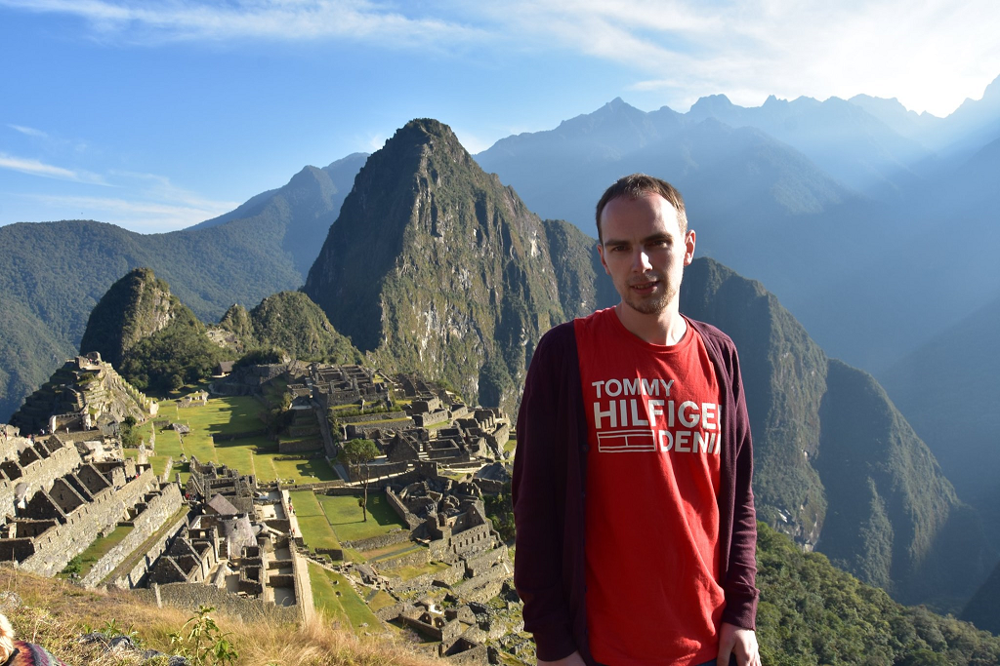
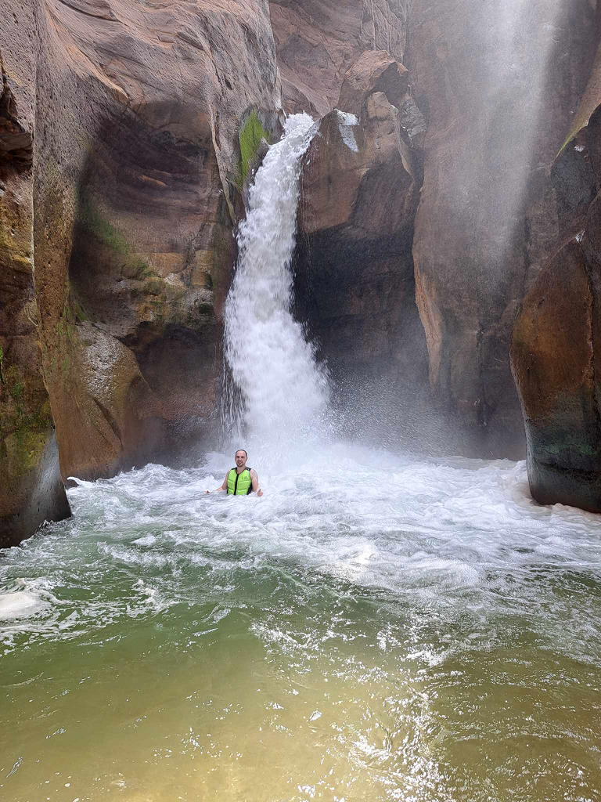

Hobby's / Interesses
IT en Tech

The internet of things en vooral de technologie erachter interesseert mij enorm en dit al van toen ik jong was. In mijn jeugdige jaren kon ik al websites maken met Flash, PHP en SQL. Ook heb ik een hele tijd als tiener met een dualboot (Ubuntu)Linux en Windows gewerkt gewoon omdat ik benieuwd was wat de verschillen waren tussen beide. Flash, PHP, SQL heb ik zelf geleerd uit interesse als tiener zonder dit op school voor mijn kiezen te krijgen. Uiteraard wil ik in de toekomst veel bijleren en wil ik nog beter worden in zowel websites als programmeren. Om dit te bereiken volg ik momenteel de opleiding: "Graduaat Programmeren".
Ik wil vooral weten hoe alles werkt en wat de code of methode hierachter is, het voelt alsof een drang om de oplossing van een raadsel te weten te komen. Hoeveel te moeilijker een code te kraken of te maken is, hoeveel te groter de voldoending is indien dit ook lukt. Ik blijf ook graag van alle nieuwigheden op de hoogte en probeer graag nieuwe technieken uit en wil ik vooral ook weten hoe deze werken. Met deze interesses lijkt de opleiding "Graduaat Programmeren" me dan ook op het lijf geschreven en zal mijn gezonde nieuwsgierigheid mij steeds op de hoogte houden zodat ik niet het risico loop outdated te worden. Ook van hardware ben ik heel nieuwsgierig zeker als dit verbetering bevat, zo was ik al heel veel jaren geleden één van de eerste personen met een bluray lezer en SSHD.
Reizen

Op reis gaan doe ik ontzettend graag, liefst van al een actieve vakantie. Ik hou er van om nieuwe plekken te ontdekken, mooie natuur en geschiedkundige plaatsen te bezoeken. Het allerliefst plan ik mijn vakantie zelf en bezoek ik meerdere locaties en hotels op 1 reis. Heb je interesse om ergens heen te gaan en wil je wat info; vraag het me gerust en ik help je met plezier... Op het einde van mijn reizen maak ik steevast een vakantieboek om zelfs na mijn reis nog mooie herrineringen te kunnen ophalen. In mijn vrije tijd probeer ik nog een beetje Spaans bij te leren omdat ik zeker nog van plan ben om nog wat meer landen in Zuid-Amerika te bezoeken en het toch altijd wat leuker is dat je met de locals in hun eigen taal kan praten. De voorbeeldfoto is Machu Pichu in Peru. Helaas is de lijst van landen die ik nog wil bezoeken zo groot dat ik altijd keuzestress heb welk land ik als volgende moet kiezen. Voor 2024 heb ik echter al Argentinië, Portugal en Madeira gepland, doordat ik mijn reizen goed voorbereid, heb ik van te voren al wel wat werk en tijd nodig om de optimale route te plannen, ook hou ik er van dat alles netjes gepland is tijdens de reis zodat ik mij ter plekke weinig zorgen moet maken of tijd moet verliezen met opzoekwerk.
Tot heden heb ik al bezocht: (zie tabel)
| Europa | België Nederland Luxemburg Frankrijk Duitland Zwitserland Oostenrijk Spanje Italië Slovenië Kroatië Tsjechië Denemarken Zweden Noorwegen Finland Estland Letland Litouwen Ijsland |
| Zuid-Amerika | Peru Bolivië Chili |
| Overige | Jordanië |
Sport

Ik ben graag actief, een gezonde geest in een gezond lichaam zoals de romeinen zeggen... Voorlopig doe ik alleen sport in recreatief verband, de enige wedstrijden waar ik aan meedoe zijn de Antwerp 10 miles, al hoop ik toch ook een keer met de Titan Run mee te doen. Ik heb een tijdje aan fitness gedaan, maar helaas ben ik hier mee gestopt toen mijn beste vriend hier mee stopte en ik zelf ook weinig tijd begon te hebben. Ik hoop echter dit in de toekomst nog opnieuw te kunnen hervatten?
Ik ga graag lopen, zwemmen, wandelen, badminton, squash, canyoning, fitness... Waarschijnlijk een hele boel extra sporten zal ik leuk vinden eens ik er aan begin. Op de foto zie je mij aan canyoning doen in Jordanië, helaas is dit een activiteit die iets moeilijker te doen is in België, des te harder geniet ik er dan maar van als ik dit op reis kan inplannen. Wandelen vind ik vooral fijn in een groene of nieuwe omgeving, liefst in de bergen zodat de intensiteit net wat hoger ligt.
Overige
Op financieel vlak heb ik interesse in crypto, beleggen in aandelen en ETF's en Forex Exchange. Op deze manier probeer ik toch nog een extra spaarcent voor later te bekomen door middel van een passief inkomen. Ook de techniek achter crypto, de blockchain interesseert mij enorm.
Muziek is bij een heel ruim: van 80's tot techno en van Nederlandstalig tot Hardstyle. Ik kan mij wel amuseren op elk nummer.
Psyochologie, politiek en geschiedenis zijn tot slot ook nog heel interessante onderwerpen voor mij, waar ik mij graag in verdiep.